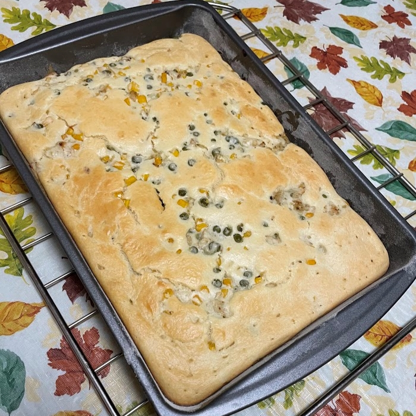
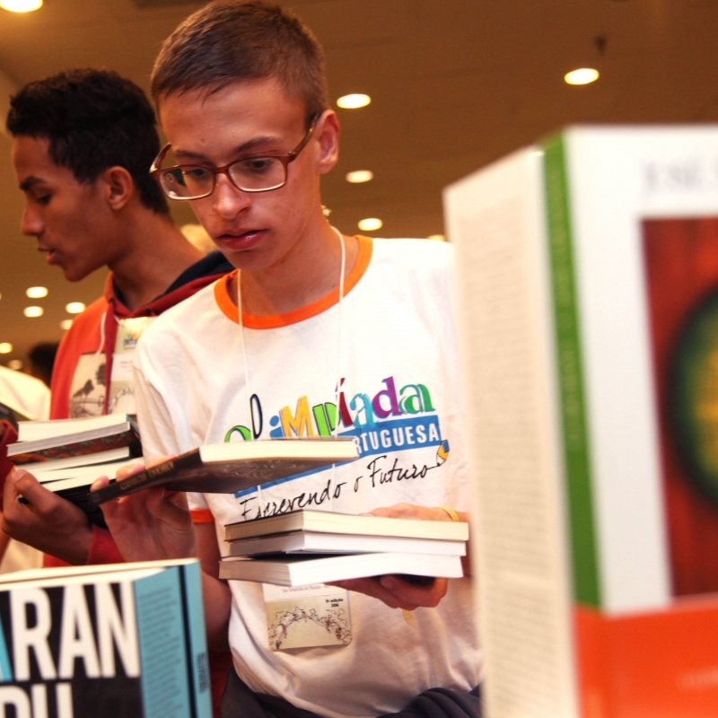

<!DOCTYPE html>
<html lang="pt-br"></html>

<head>
    <title>Jonas Costa - Hobbies</title>
    <link rel="icon" href="../resources/favicon.png">
    <link rel="stylesheet" href="../home_screen.css">
    <link rel="preconnect" href="https://fonts.googleapis.com">
    <link rel="preconnect" href="https://fonts.gstatic.com" crossorigin>
    <link href="https://fonts.googleapis.com/css2?family=Chakra+Petch:wght@300;700&display=swap" rel="stylesheet">
    <meta http-equiv=”Content-Type” content=”text/html; charset=utf-8″>
  </head>

  <body>

    <div class="sidenav">
        <div class="jonas_headshot">
            
        </div>
    

        <h1>Jonas Costa</h1>
        <div class="job">
            Desenvolvedor de Software
        </div>

        <div id="main_menu" class="main_menu">
            <a href="index.html">Página Principal</a>
            <a href="about_me.html">Sobre Mim</a>
            <a href="projects.html">Projetos</a>
            <a href="hobbies.html">Hobbies</a>
            <a href="contact.html">Contato</a>

            <div class="language">
                <a href="hobbies.html">
                    
                </a>
                
                <a href="../hobbies.html">
                    
                </a>
                
            </div>

        </div>

        

    </div>


    


  
    <!-- Page content -->
    <div class="main">
        <div class="title">
            <h2>Hobbies</h2>
        </div>

        <div class="page_content">
            
            
            <div class="item_wrapper">
                <h3>Acampar</h3>
                    
                
                <div><p>Comecei a fazer acampamentos no UWC-USA, a escola de ensino médio internacional que frequentei no Novo México, nos Estados Unidos. Desde minha primeira viagem, passei, no total, quase dois meses acampando. Gosto de estar em contato com a natureza, ver os animais em seu ambiente natural e o senso de comunidade que sinto quando faço caminhadas em grupo. Para mim, é uma maneira de liberar o estresse e encontrar alegria nas pequenas coisas ao meu redor.</p>
                </div>
            </div>
            
            
            
            
            <div class="item_wrapper">
                <h3>Cozinhar</h3>
                
                <div><p>Por muito tempo, preparar minhas refeições era uma fonte de ansiedade e estresse. No entanto, depois que deixei o plano de refeições que minha faculdade oferecia, não tive outra escolha. Lentamente, fiquei confortável cozinhando e assando, e agora é uma das atividades que mais gosto de fazer. Tenho muito prazer em saber exatamente como meus pratos são preparados e temperados. Meus pratos favoritos de fazer são torta de frango, lentilha com cenoura e qualquer comida brasileira. </p></div>
            </div>
           
            
            
            <div class="item_wrapper">
                <h3>Ler</h3>
                

            <div><p>Enquanto eu crescia, eu estava sempre cercado por livros. Comecei a ler aos quatro anos e tenho várias lembranças do tempo que passei em bibliotecas públicas, virando páginas avidamente. Meus gêneros favoritos são ficção científica, drama e aventura e a obra mais fascinante que já li é “História da Sua Vida”, de Ted Chiang. A leitura me permite desenvolver empatia, bem como obter uma compreensão mais ampla do mundo e de seus habitantes. </p>    </div>
            </div>
                
        </div>
    </div>

    <script src="../script.js"></script>
</body>


